حفل تخرج – مدرسة وكلية غزة
توثيق سينمائي ومونتاج إيقاعي مفعم بالفرحة والاعتزاز، يبرز لحظات تكريم الخريجين والبهجة الغامرة مع انتقالات ديناميكية متناسقة مع الصوت.
مصور وممنتج فيديو محترف بخبرة تتجاوز 8 سنوات في تغطية الفعاليات الكبرى، والمبادرات الإنسانية، وإنتاج المحتوى الرقمي المؤثر في قطاع غزة. نجمع بين جمالية التكوين البصري وسرعة المونتاج الإيقاعي لنمنح رسالتك القوة التي تستحقها.
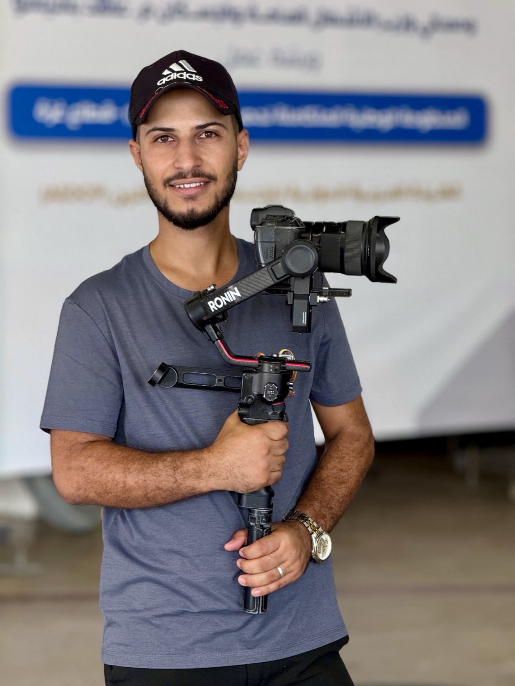
خبرة عملية في الميدان
تغطية وإنتاج مرئي مكتمل
دقة والتزام بتسليم المواعيد
"الصورة ليست مجرد لقطة تلتقطها العدسة، بل هي شعور حي يُخلّد ورسالة صادقة تُروى لتبقى حاضرة في الذاكرة بعين سينمائية متفردة."
على مدار أكثر من 8 سنوات من العمل الميداني الدؤوب في قطاع غزة، تخصصت في توثيق الفعاليات الكبرى والمبادرات الإنسانية والمجتمعية التي تنظمها المؤسسات الدولية والمحلية، بالإضافة إلى إنتاج الريلز والفيديوهات التسويقية المبتكرة.
أؤمن بأن التميز في عالم الميديا يتطلب توازناً دقيقاً بين إتقان التقنيات الحديثة (من توازن الحركة بالكاميرا وتوزيع الإضاءة المدروس) وبين الإحساس الإنساني الصادق بالقصة وأبطالها.
زوايا مبتكرة وإضاءة ناعمة تبرز تفاصيل اللحظة وعفويتها دون افتعال.
قص متناغم مع المؤثرات الصوتية والموسيقى لخطف الانتباه من الثانية الأولى.
خبرة طويلة في التعامل مع ظروف التصوير الميداني الصعبة وإنجاز المهام بدقة.
التزام صارم بالمواعيد المحددة مع تسليم المواد بصيغ جاهزة للنشر المباشر.
تصفح نماذج من الفيديوهات والتغطيات الميدانية وجلسات التصوير الفوتوغرافي التي تم تنفيذها لصالح مؤسسات وفعاليات بارزة.
توثيق سينمائي ومونتاج إيقاعي مفعم بالفرحة والاعتزاز، يبرز لحظات تكريم الخريجين والبهجة الغامرة مع انتقالات ديناميكية متناسقة مع الصوت.
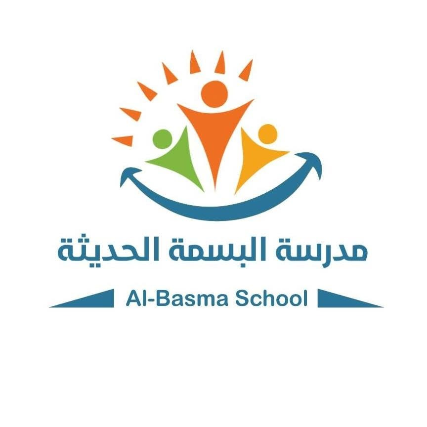
تغطية شاملة ومونتاج مميز لفقرات الاحتفال المدرسي التفاعلي، ينقل بهجة الطلاب والأنشطة الإبداعية بجودة بصرية زاهية ولقطات عفوية.
مونتاج فيديو ترويجي يرصد الأنشطة التربوية والرياضية بروح حيوية ولقطات متحركة سلسة تعكس تنظيماً وتفاعلاً عالي المستوى.
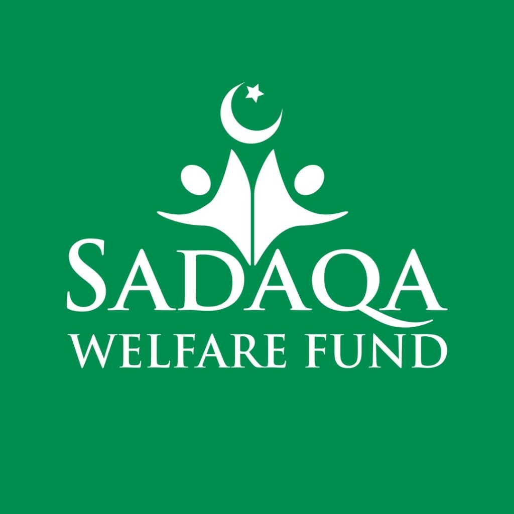
توثيق إنساني ميداني لحملة إغاثية لتوزيع اللحوم على العائلات، ينقل أثر العطاء بأسلوب توثيقي راقٍ يركز على الكرامة والمصداقية.
إنتاج مرئي سينمائي لمسير شاحنات المياه وسقاية المخيمات، تجسيد حي لمعاناة وصمود الأهالي وأثر مشاريع الإغاثة الحيوية على الأرض.
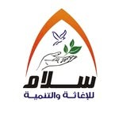
ريلز سريع ومكثف مصمم خصيصاً للتفاعل مع الجمهور، يدمج اللقطات القوية مع النص الحركي والصوت المؤثر لدعم حملات التوعية والمساندة.
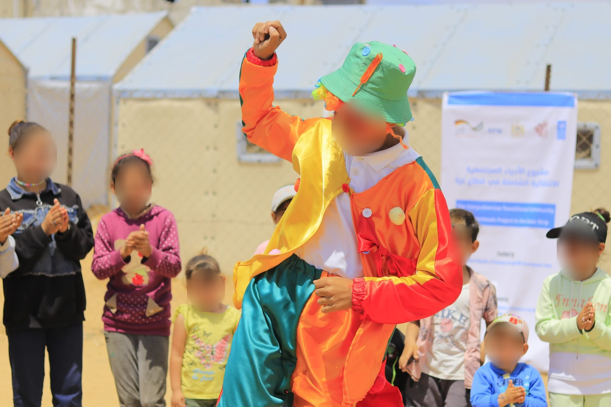
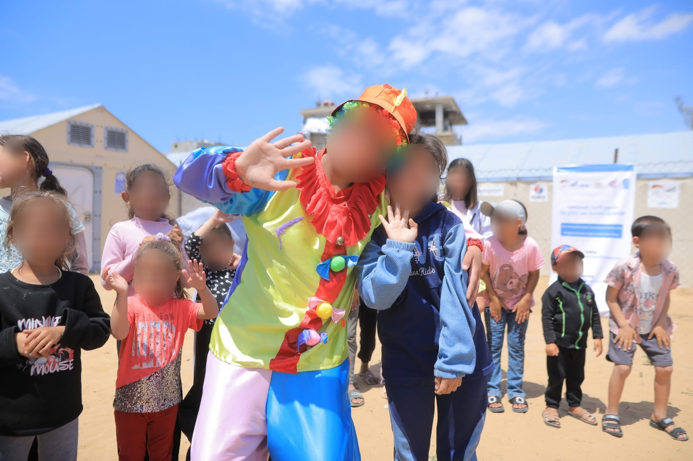
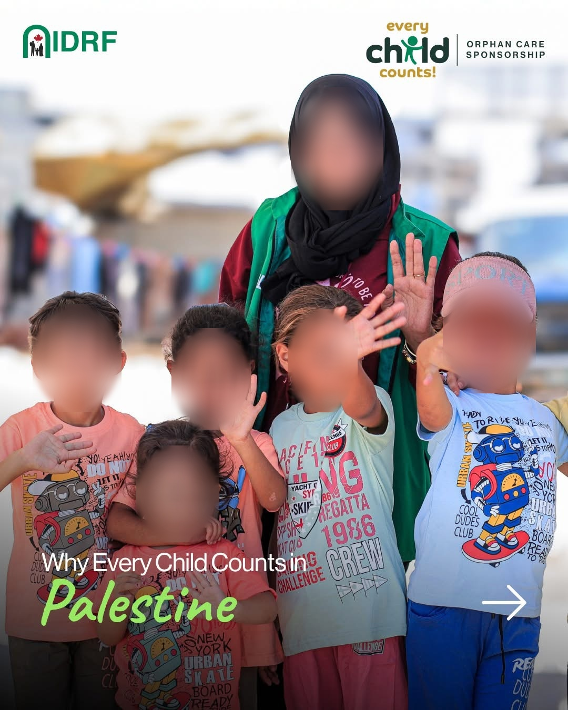
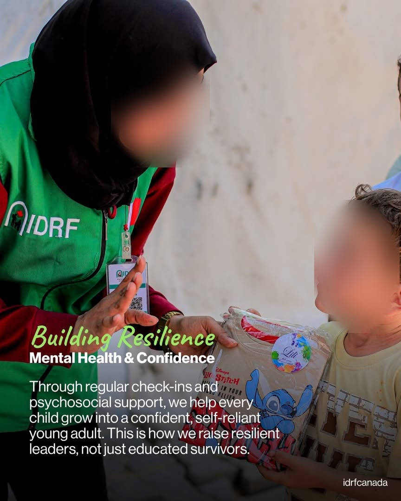
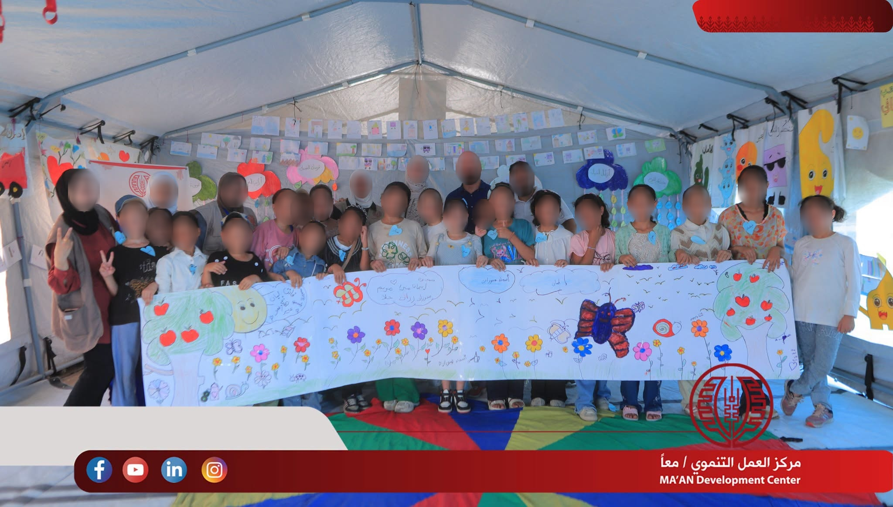
محطات عمل متواصلة ومتدرجة مع شركات الإنتاج والمنظمات الدولية والمحلية، صقلت مهاراتي في إدارة الإنتاج المرئي من الفكرة الأولى حتى التسليم النهائي.
انطلاقة المسار المهني لمدة 5 سنوات متواصلة في تصوير وإنتاج المحتوى المرئي لمجموعة واسعة من الفعاليات والمشاريع الكبرى. تشغيل الكاميرات الاحترافية والسينمائية، وإدارة أطقم الإضاءة والصوت، ومونتاج المواد متعددة الوسائط لتلبية متطلبات الشركات والمؤسسات الإعلامية.
توثيق الأنشطة الميدانية الإنسانية والمشاريع الإغاثية والتنموية لمؤسسة حمامة السلام (Peace Dove Foundation). تصوير وإنتاج قصص نجاح ملهمة وفيديوهات ريلز موجهة للمانحين والمجتمع، مع التنسيق الميداني للفرق وإعداد التقارير التوثيقية الدقيقة.
إنتاج وتصوير محتوى مرئي وفوتوغرافي رفيع المستوى لصالح منظمات دولية ومحلية مرموقة مثل UNICEF وUNDP ومؤسسة التعاون Taawon وIDRF. توثيق المشاريع الإنسانية الحساسة خلال فترات الطوارئ والحرب، مع تقديم خدمات التوثيق البصري لجمعية تطوير بيت لاهيا باستخدام أحدث تقنيات Adobe Premiere Pro.
العمل بشكل حر ومستقل في تقديم حلول مرئية سينمائية متكاملة للمؤسسات، الشركات، ورواد الأعمال. التخصص في إخراج الريلز والفيديوهات الإعلانية والتسويقية عالية الجودة، وتغطية الفعاليات الميدانية مع جاهزية تامة للتنقل والتعاقد المباشر داخل قطاع غزة وخارجه.
الجمع بين أحدث برمجيات صناعة الأفلام العالمية ومعدات التصوير السينمائي الاحترافية لتقديم منتج مرئي متكامل.
تكوين الكادر، زوايا سينمائية، ضبط حركة الكاميرا بالجيمبال، والتعامل الاحترافي مع الإضاءة الطبيعية والصناعية في مختلف الظروف الميدانية.
بناء القصة المرئية بأسلوب إيقاعي مشوق، اختيار الترانزيشنز المناسبة، ومزامنة الصوت والحركة لإنتاج أعمال تأسر المشاهد وتترك أثراً.
تلوين لقطات Log و Rec.709 لمنح المشهد مظهراً سينمائياً دافئاً، مع معالجة نقاء الصوت وإضافة المؤثرات الصوتية (Foley & SFX) المعززة للمشهد.
التقاط اللحظات والمشاعر الإنسانية وتوثيق الفعاليات الحية، مع معالجة احترافية للصور تبرز التباين والعمق والألوان الواقعية بدون مبالغة.
فخور بالتعاون وتوثيق المشاريع الميدانية والحملات الإنسانية لصالح كبرى المنظمات
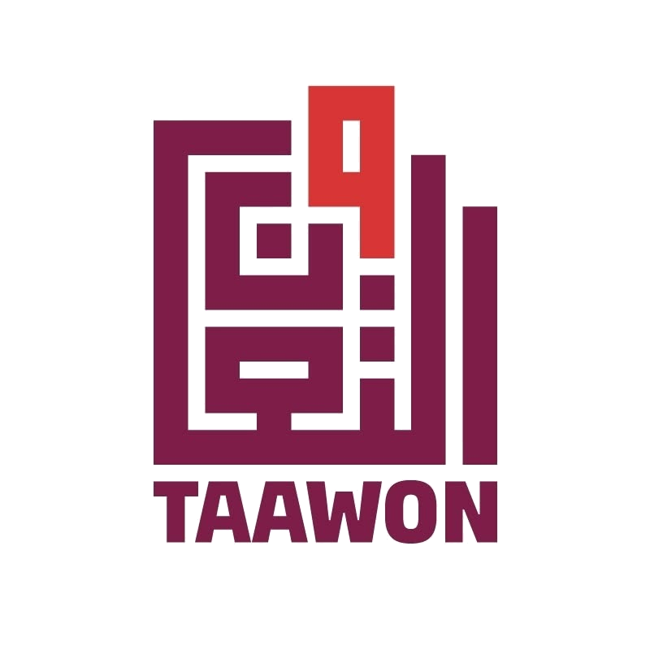
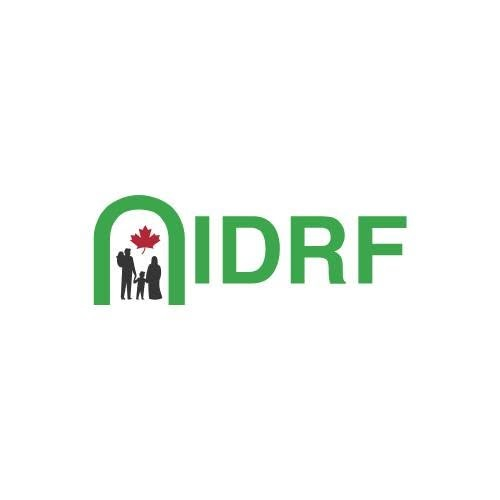
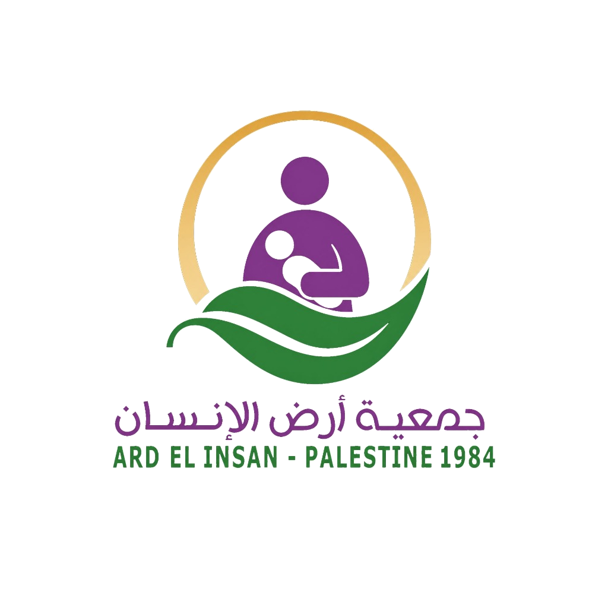
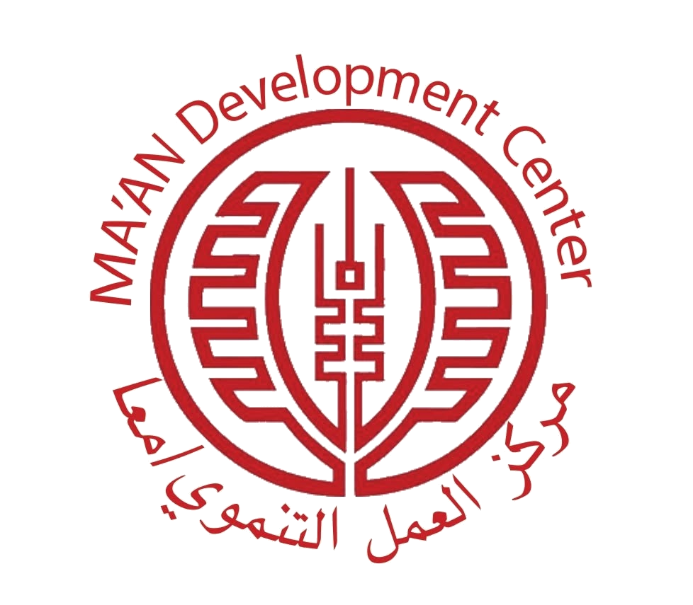
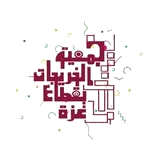
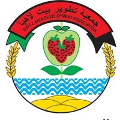
سواء كنت تخطط لتوثيق فعالية مؤسسية، أو إطلاق حملة إنسانية، أو إنتاج ريلز وفيديوهات تسويقية عالية التأثير، يسعدني مناقشة التفاصيل وتحديد خطة العمل المناسبة.
ملف متكامل يوثق 8 سنوات من الخبرة الميدانية (2018 - 2026) في التصوير السينمائي، المونتاج، الإنتاج الإنساني والمؤسساتي، والمهارات التقنية والأكاديمية.
اختر نوع الخدمة التي تبحث عنها، وسنفتح لك محادثة واتساب مجهزة برسالتك مباشرة لبدء التنسيق خلال دقائق: